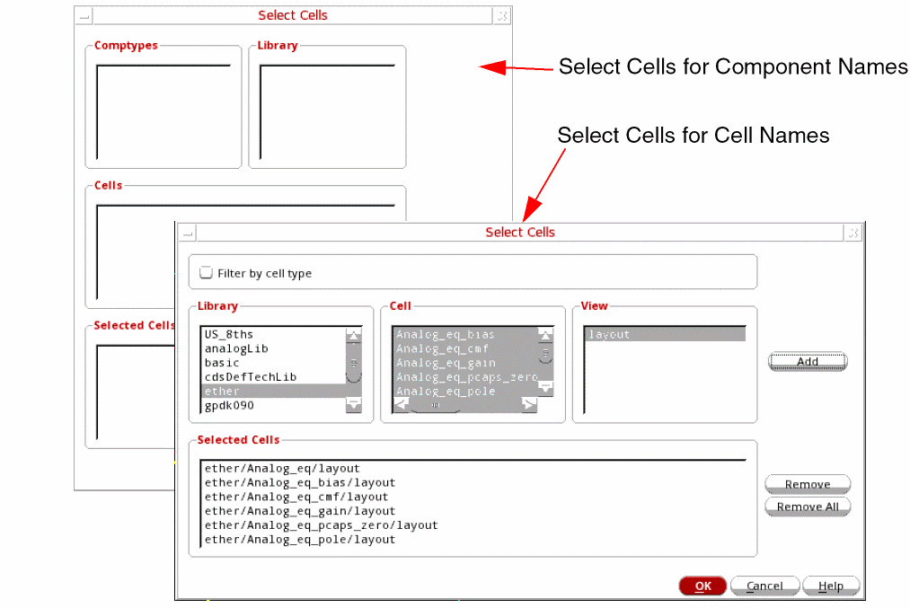
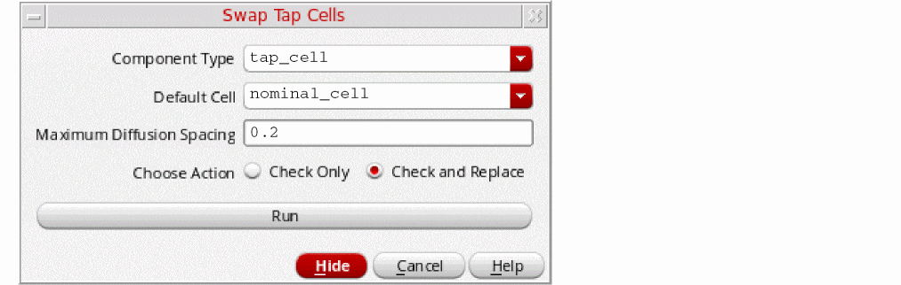

5
Finishing Tasks
This section describes the following tasks performed after running the Virtuoso Custom Digital Placer:
Inserting and Deleting Filler Cells
From the layout window menu bar, choose Place – Custom Digital – Insert/Delete Fillers to display the Insert/Delete Filler Cells Form.
Use the options in the form to insert or delete filler cells. During insertion of filler cells, all the existing filler cells in the design are deleted, and new filler cells are inserted according to the specified component type/cell names. For example, filler cells of component types A and B are present in a design. If you specify that filler cells of component type B need to be inserted, then filler cells of both type A and B are deleted, and new filler cells of type B are inserted.
- Select the Boundary within which filler cells must be added. The default is prBoundary. You can specify any custom boundary that is defined in the design.
- Select the Insert Mode.
- Select whether you want to filter the filler cells based on the Component Types or Cell Names.
-
Click Choose. The Select Cells form is displayed.
- With Component Types selected, the Select Cells form lets you select the required Comptypes and Library. Filler cells that are assigned to a component type with the component class FILLER are listed. For more information on component types, see Defining a Component Type in Virtuoso Layout Suite XL User Guide and Defining a Standard Cell Substrate Contact.
-
With Cell Names selected, the Select Cells form lets you select the required Library, Cell, and View names. You can select multiple cells. View displays only the common layout views.
In this mode, you can select Filter by celltype to restrict the Cell list to only those cells that belong to the coreSpacer cellType.

-
Click Add to add the selections to the Selected Cells section.
Remove lets you delete individual cells from the list, whereas Remove All clears all entries from the list. - Click OK to return to the Insert/Delete Filler Cells form.
- Select Ignore Placement Blockages in the Options section to ignore blockages during filler cell creation.
- Select Physical Only to set the physOnly attribute for filler cells.
- Click OK to insert filler cells.
Filler cells are added into the empty spaces between the standard cells in each row without impacting the row size.
The same options and procedure apply to the Delete mode. Filler cells are deleted from the empty spaces between standard cells in each row without impacting the row size. All filler cells of the specified component type or cell names are deleted from the design. For example, if the filler cells of component types A and B are present in a design, and you want to replace the filler cells of component type B with the new filler cells. In this case, if you do an Insert, then all filler cells are deleted and replaced. To retain the filler cells of component types A, first delete the existing filler cells of component type B, and then insert the new filler cells of component type B. For more information, see Insert/Delete Filler Cells Form.
Swapping Tap Cells
The Swap Tap Cells feature helps you to detect tap cells with maximum spacing violations. You can also replace them with tap cells that have valid maximum spacing values.
-
Select Place – Swap Tap Cells to view the Swap Tap Cells form.
 -
Specify the Component Type for which you need to perform the check.
- Select the Default Cell with which the tap cells in the designs need to be replaced.
- Specify the permitted Maximum Diffusion Spacing for validation.
-
Select the action that needs to be performed:
-
Check Only: Checks and reports maximum diffusion spacing violations in the current design. All tap cells in the design are highlighted in white and the tap cells with violations are highlighted in yellow.
- Check and Replace: This is a two-step process. First, all tap cells in the design are replaced with the selected Default Cell. Next, all maximum diffusion spacing violations are detected and their tap cells are replaced with the alternate best-matched tap cells that are available in the design.
-
Check Only: Checks and reports maximum diffusion spacing violations in the current design. All tap cells in the design are highlighted in white and the tap cells with violations are highlighted in yellow.
- Click Run.
For information about inserting tap cells, see Defining a Standard Cell Substrate Contact.
Return to top